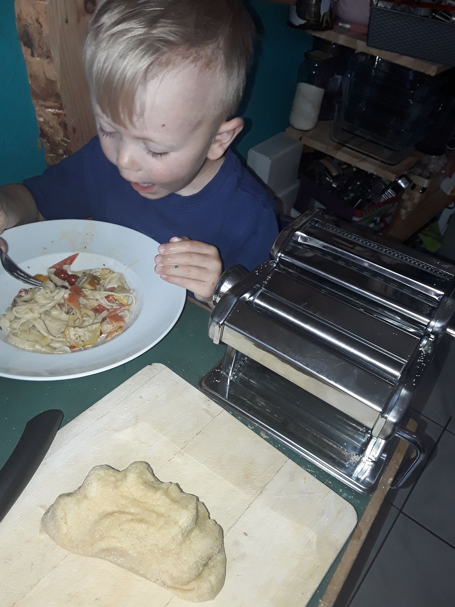
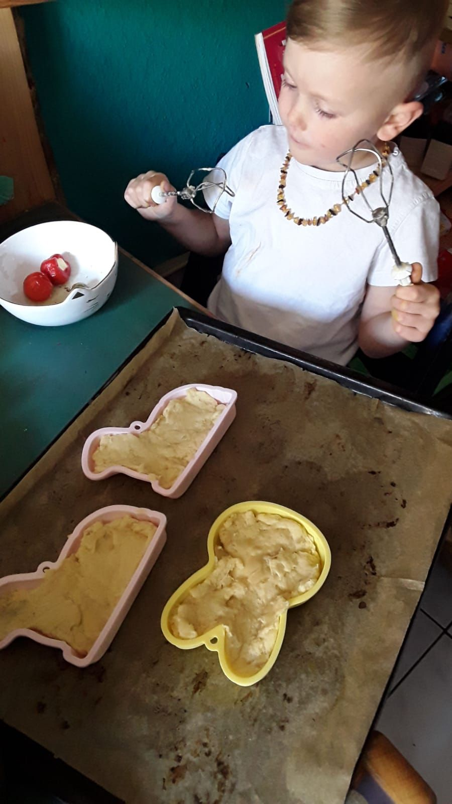
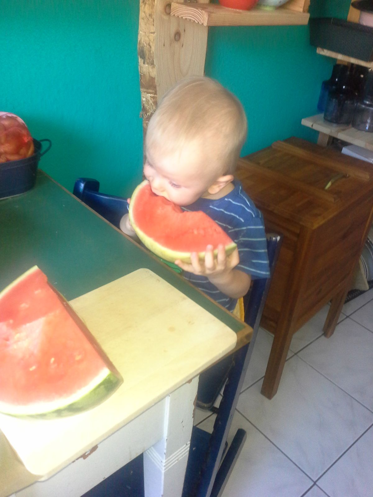

Manche Familien haben ein Wohnzimmer als Herzstück. Bei uns war es die Küche. Du auf deinem Stuhl, die Ärmel hochgekrempelt, immer mittendrin. Nudeln haben wir selbst gemacht – du warst der strengste Qualitätsprüfer an der Nudelmaschine. Plätzchen wurden bei uns nie einfach nur ausgestochen; die Hälfte vom Teig ist auf geheimnisvolle Weise „verschwunden", und deine Backen waren verdächtig voll.


Kochen war nie nur Essen machen. Es war unsere Zeit. Da wurde erzählt, was in der Schule war. Da wurde gelacht, gekleckert, probiert. Du hast schneiden gelernt, rühren, abschmecken – und ich habe gelernt, dass ein Essen doppelt so gut schmeckt, wenn kleine Hände mitgeholfen haben.

Heute koche ich für eine Person. Es geht schneller, es kleckert nichts, nichts verschwindet vom Teig. Und genau das ist das Traurigste daran. Eine ordentliche, stille Küche ist kein Fortschritt, wenn vorher ein Kind darin gelacht hat.
Dein Stuhl steht noch da. Die Nudelmaschine wartet. Und wenn du wieder zu Hause bist, machen wir als Erstes deine Lieblingsnudeln – und du darfst wieder so viel naschen, wie du willst.